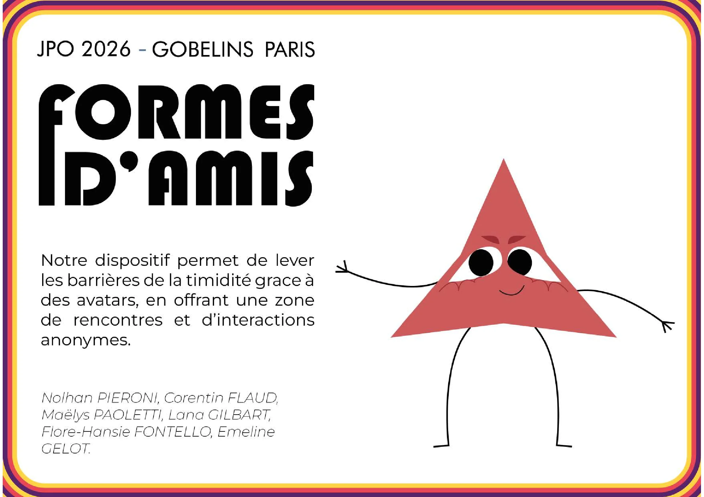
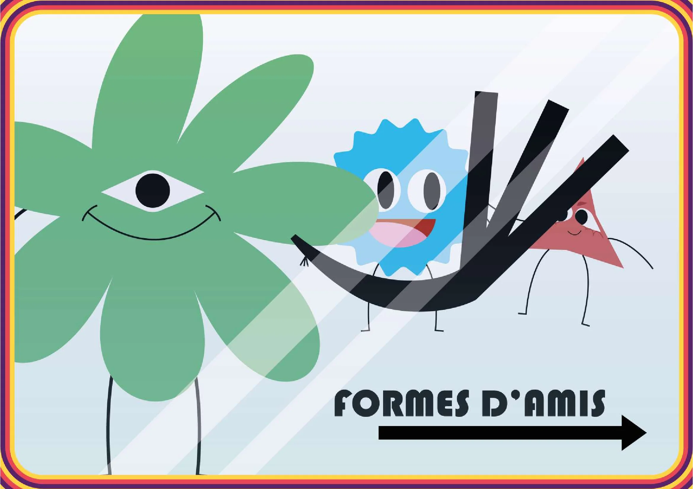
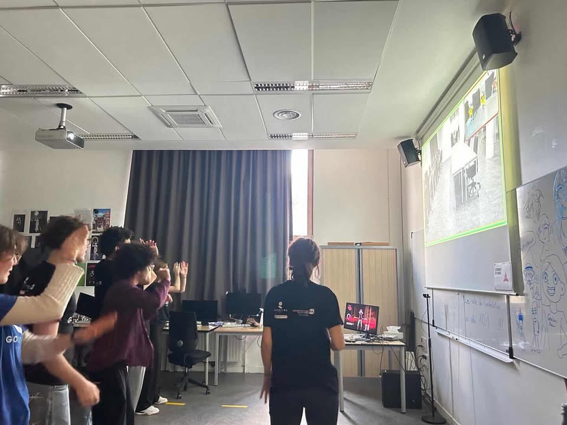
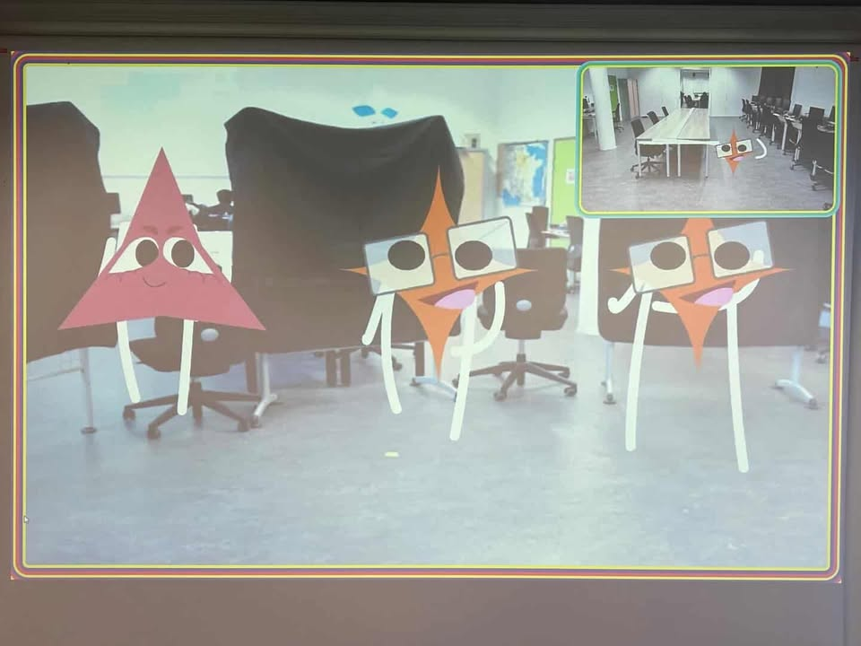

Interactivité · Installation · WebRTC
Formes
d'Amis
Une expérience interactive live conçue en 4 jours pour les Journées Portes Ouvertes de GOBELINS Paris. Deux caméras placées dans deux salles distinctes capturent les mouvements des participants et les transforment en formes géométriques animées transmises à l'autre salle comme un appel vidéo drôle et anonyme.
Fonctionnement
Deux caméras
Deux salles distinctes. Chaque caméra capture les mouvements des participants en temps réel.
Transformation
La détection de posture transforme chaque personne en une forme géométrique animée et colorée.
Connexion distante
Le flux vidéo altéré est transmis à l'autre salle comme un appel vidéo — drôle et anonyme.
Communication distante en temps réel entre les deux salles
Détection de la posture corporelle frame par frame
Rendu graphique des formes animées en canvas
Mon rôle
Design & Canvas
Je me suis occupé du canvas et css du projets afin de crée les bras et les jambes des personnages je me suis aussi occupés d'assembler les bras et les jambes à la forme ainsi que de leur visage et j'ai fait en sorte que les visages et les formes apparaissent aléatoirement.
Cartel et Signalétique



Documentation

